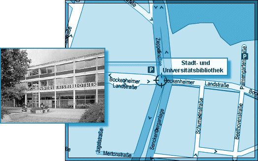
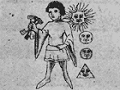

L'ICPA est une association privée créée par des amis et des collègues du journaliste Jack Lorski au lendemain de l'annonce de son meurtre en Écosse. Son seul but est d'aider les services de police et de justice internationaux à mettre fin le plus tôt possible aux agissements criminels du Phoenix.
SKL NETWORK est l'agence qui employait Jack Lorski. Elle a reçu et rendu public les deux CD-Roms envoyés par le Phoenix.
LIBERATION.FR a publié plusieurs articles sur l'affaire du Phoenix. Utilisez son moteur de recherches pour accéder à ses archives.
VICTIME N°10 : MARKUS HERMANN
- IDENTITÉ
Markus Hermann est né le 20 août 1955 à Cologne (Allemagne). En 1998, c'est dans cette ville qu'il crée l'Église Intransigeante, mouvement ultra catholique destiné à restaurer les valeurs chrétiennes traditionnelles. Face à la montée de ce qu'il nommait la dépravation des sociétés occidentales, il avait opté pour des méthodes plutôt musclées, en menant notamment des opérations anti-avortement.
Il était séparé de son épouse Sabine qui ne partageait pas ses idées radicales.
Il était membre laïc de Manus Domini dont l'Église Intransigeante est devenue la plus importante filiale en Europe.
- PHOTO
- DATE ET LIEU DU CRIME
Le corps de Markus Hermann a été retrouvé le 17 décembre 2002, près de la Stadt-und Universitätsbibliothek de Francfort. Les analyses effectuées ont prouvé qu'il a été tué quelques jours plus tôt, deux semaines exactement après le meurtre de Carolina Molikova. - AUTOPSIE
Markus Hermann a été étranglé. Son corps était recouvert de brûlures représentant des symboles ésotériques.
- ANALYSE
Markus Hermann est la dixième victime connue du Phoenix. Le tueur l'a d'abord choisi parce qu'il était membre de Manus Domini, condition sine qua non de sa vengeance contre cette société secrète. En tuant le fondateur de l'Église Intransigeante, filiale importante de Manus Domini, le Phoenix a certainement voulu impressionner ses dirigeants et peut-être les amener à commettre des erreurs.
Afin de respecter son rituel lié au parcours européen de son maître à penser, Giordano Bruno, le Phoenix a également choisi Markus Hermann parce qu'il habitait Francfort. En effet, en 1590, le philosophe italien se réfugie au couvent des Carmélites de Francfort malgré son avis d'expulsion dûe à sa dernière excommunication.
Toujours en référence à son maître, le Phoenix a signé son crime en associant Markus Hermann à Cupido (Cupidon), le onzième principe élémentaire de la magie brunienne (De imaginum idearum compositione, 1591) :Un garçon d'une beauté miraculeuse aux yeux de Dieu comme des personnes. Il est suivi de l'image du Soleil, de la Terre, de la Lune et d'un autre premier-né, des dieux pour ainsi dire. Il tient trois clefs dans sa main, une de fer, la seconde d'argent et la troisième d'or. - DOCUMENT
• Extrait d'un article de liberation.fr relatant la découverte du corps de Markus Hermann
« Concernant le troisième meurtre découvert avant-hier à Francfort, à deux pas de la Stadt-und Universitätsbibliothek, le lieutenant reconnaît disposer pour l'heure de moins d'indices : la victime est inconnue. Un homme jeune. Le légiste s'en occupe. J'attends son rapport. Hanke consulte un banal calepin : Premier constat. Probablement des brûlures. Des symboles ressemblant à ceux de Marburg et de Wittenberg aux endroits encore identifiables du corps… Et puis Sol Invictus, toujours, gravé sur la porte en bois avec un morceau de la… On interrompt le lieutenant. Ça ira… On refuse, une fois de plus, sa pile de photographies. Il va falloir qu'on sorte prendre un peu l'air. On se demande si le lieutenant se rend compte qu'il ne faut pas qu'il parle trop boulot avec les gens. Il récapitule, concentré : C'est probablement toujours le même rituel : des victimes isolées. Etranglement et brûlures. Les symboles ésotériques et cette formule, Sol Invictus. Vous avez des questions ?, enchaîne-t-il, imperturbable. Devant notre trouble, il continue, avec ce petit sourire froid : Très bien. Je vais recevoir maintenant vos confrères Italiens. Je communique avec la presse car je ne veux pas perdre de temps. J'ai décidé de provoquer au plus vite ce monstre afin qu'il commette une erreur. Silence, puis : J'aurai sa peau.
Et soudain, on frémit. On prend peur, tant à la perspective de croiser le serial killer sur son chemin, que parce qu'on réalise que les paupières du lieutenant Gerd Hanke, jamais ne se baissent sur ses yeux bleu pâle. »
- LIENS
• Site de l'Église Intransigeante en Allemagne
• Forum de mysterious-world.net